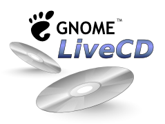

The GNOME LiveCD

The GNOME LiveCD is a single CD which contains all the latest and greatest GNOME software. You can get it from GNOME's BitTorrent server or GNOME FTP.
These pages give some background information about the LiveCD, and explain some ways it can be used to promote GNOME.
Showing off GNOME with the LiveCD
The LiveCD is meant to shown off GNOME, and has been used that way at all kinds of places, including Linux World Expo Boston, OSCON, and GUADEC. Some things we've done:
- Used the LiveCD on a laptop as a demo machine, to show to people at conference booths.
- Handed out nicely printed CDs in the local language at GUADEC.
- Customized the splash screen for LWE, and handed the CDs out to LWE attendees.
- Customized it into many languages, to help promote GNOME to local users.
Some things we'd like to see, but aren't sure have happened yet:
- Hand it out at a local LUG when you're giving a talk about how good GNOME is.
- Have other projects base their liveCDs on a liveCD with strong 'GNOME' defaults.
If you have shown it off, drop the GNOME Marketing list an email so we can share in the fun and get and give advice.